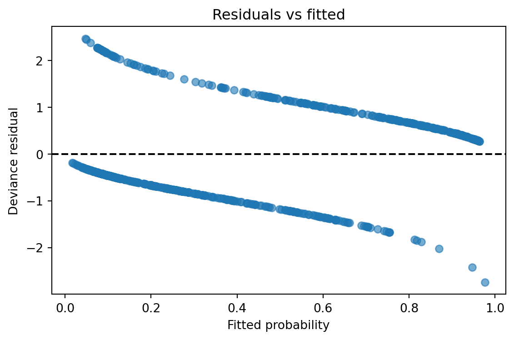
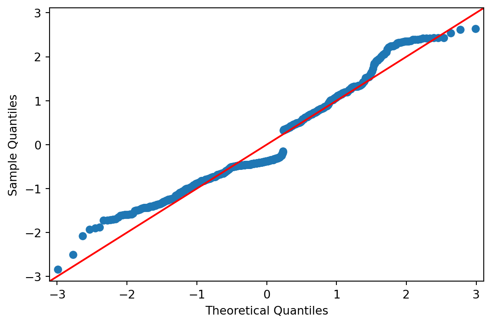
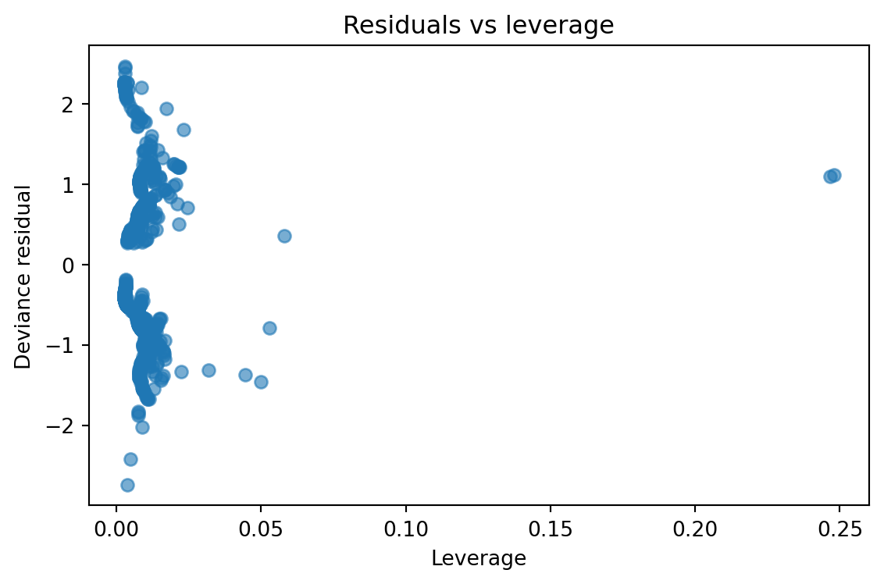

import matplotlib.pyplot as plt
import numpy as np
import pandas as pd
import seaborn as sns
import statsmodels.api as sm
import statsmodels.formula.api as smf
import sys
print(sys.executable)
titanic = sns.load_dataset("titanic").dropna(subset=["survived", "fare", "age", "sex", "pclass"])
fit = smf.glm(
"survived ~ fare + age + C(sex) + C(pclass)",
data=titanic,
family=sm.families.Binomial(),
).fit()
# Main GLM table
print(fit.summary())
# Coefficient table with confidence intervals
coef_table = fit.summary2().tables[1]
coef_table["odds_ratio"] = np.exp(coef_table["Coef."])
print(coef_table)
# Fitted probabilities and residual diagnostics
diagnostics = titanic[["survived", "fare", "age", "sex", "pclass"]].copy()
diagnostics["fitted_prob"] = fit.fittedvalues
diagnostics["pearson_resid"] = fit.resid_pearson
diagnostics["deviance_resid"] = fit.resid_deviance
diagnostics["response_resid"] = fit.resid_response
print(diagnostics.head())
# Simple classification table at cutoff 0.5
diagnostics["pred_class"] = (diagnostics["fitted_prob"] >= 0.5).astype(int)
print(pd.crosstab(diagnostics["survived"], diagnostics["pred_class"], margins=True))
# Influence summary
influence = fit.get_influence(observed=True)
print(influence.summary_frame().head())
# Diagnostic plots
fig, ax = plt.subplots(figsize=(6, 4))
ax.scatter(diagnostics["fitted_prob"], diagnostics["deviance_resid"], alpha=0.6)
ax.axhline(0, color="black", linestyle="--")
ax.set_xlabel("Fitted probability")
ax.set_ylabel("Deviance residual")
ax.set_title("Residuals vs fitted")
plt.tight_layout()
fig = plt.figure(figsize=(6, 4))
sm.qqplot(diagnostics["deviance_resid"], line="45", fit=True, ax=plt.gca())
plt.tight_layout()
fig, ax = plt.subplots(figsize=(6, 4))
ax.scatter(influence.hat_matrix_diag, diagnostics["deviance_resid"], alpha=0.6)
ax.set_xlabel("Leverage")
ax.set_ylabel("Deviance residual")
ax.set_title("Residuals vs leverage")
plt.tight_layout()
plt.show()C:\Users\xiaox\venvs\core\Scripts\python.exe
Generalized Linear Model Regression Results
==============================================================================
Dep. Variable: survived No. Observations: 714
Model: GLM Df Residuals: 708
Model Family: Binomial Df Model: 5
Link Function: Logit Scale: 1.0000
Method: IRLS Log-Likelihood: -323.61
Date: Wed, 08 Apr 2026 Deviance: 647.23
Time: 15:40:30 Pearson chi2: 768.
No. Iterations: 5 Pseudo R-squ. (CS): 0.3588
Covariance Type: nonrobust
==================================================================================
coef std err z P>|z| [0.025 0.975]
----------------------------------------------------------------------------------
Intercept 3.7225 0.465 8.014 0.000 2.812 4.633
C(sex)[T.male] -2.5185 0.208 -12.096 0.000 -2.927 -2.110
C(pclass)[T.2] -1.2766 0.313 -4.083 0.000 -1.889 -0.664
C(pclass)[T.3] -2.5416 0.328 -7.754 0.000 -3.184 -1.899
fare 0.0005 0.002 0.231 0.817 -0.004 0.005
age -0.0367 0.008 -4.750 0.000 -0.052 -0.022
==================================================================================
Coef. Std.Err. z P>|z| [0.025 \
Intercept 3.722505 0.464511 8.013809 1.112092e-15 2.812080
C(sex)[T.male] -2.518505 0.208202 -12.096470 1.102513e-33 -2.926573
C(pclass)[T.2] -1.276590 0.312637 -4.083299 4.440076e-05 -1.889348
C(pclass)[T.3] -2.541576 0.327768 -7.754200 8.890245e-15 -3.183989
fare 0.000523 0.002258 0.231436 8.169761e-01 -0.003903
age -0.036730 0.007732 -4.750108 2.033082e-06 -0.051886
0.975] odds_ratio
Intercept 4.632931 41.367901
C(sex)[T.male] -2.110437 0.080580
C(pclass)[T.2] -0.663833 0.278987
C(pclass)[T.3] -1.899163 0.078742
fare 0.004948 1.000523
age -0.021575 0.963936
survived fare age sex pclass fitted_prob pearson_resid \
0 0 7.2500 22.0 male 3 0.105095 -0.342691
1 1 71.2833 38.0 female 1 0.914041 0.306664
2 1 7.9250 26.0 female 3 0.557269 0.891328
3 1 53.1000 35.0 female 1 0.921630 0.291607
4 0 8.0500 35.0 male 3 0.067930 -0.269965
deviance_resid response_resid
0 -0.471249 -0.105095
1 0.423980 0.085959
2 1.081395 0.442731
3 0.404010 0.078370
4 -0.375094 -0.067930
pred_class 0 1 All
survived
0 357 67 424
1 81 209 290
All 438 276 714
dfb_Intercept dfb_C(sex)[T.male] dfb_C(pclass)[T.2] dfb_C(pclass)[T.3] \
0 0.003637 -0.011179 -0.001059 -0.008898
1 0.014160 -0.014328 -0.013001 -0.013991
2 0.013733 -0.044640 -0.006971 0.020949
3 0.015903 -0.013461 -0.013956 -0.015310
4 0.007529 -0.007682 -0.003090 -0.009185
dfb_fare dfb_age cooks_d standard_resid hat_diag dffits_internal
0 0.000848 -0.000039 0.000062 -0.343235 0.003164 -0.019338
1 -0.002725 -0.002650 0.000077 0.307414 0.004875 0.021518
2 -0.008929 0.007979 0.001093 0.894969 0.008120 0.080975
3 -0.005975 -0.004698 0.000071 0.292332 0.004952 0.020622
4 -0.000537 -0.006890 0.000034 -0.270341 0.002776 -0.014264 

